volver
de esto tampoco nos vamos a morir
2025
de esto tampoco nos vamos a morir gira alrededor del universo simbólico, material y afectivo del jardín de la casa familiar en la que crecí. son imágenes, prácticas, materialidades, metáforas, escalas e imaginarios desplazados, intervenidos, reproducidos y traducidos.
vistas de instalación:
-
bajo cielos fluidos...
curaduría de Paola Peña
sala de exposiciones, universidad javeriana de bogotá
bogotá, colombia
2025
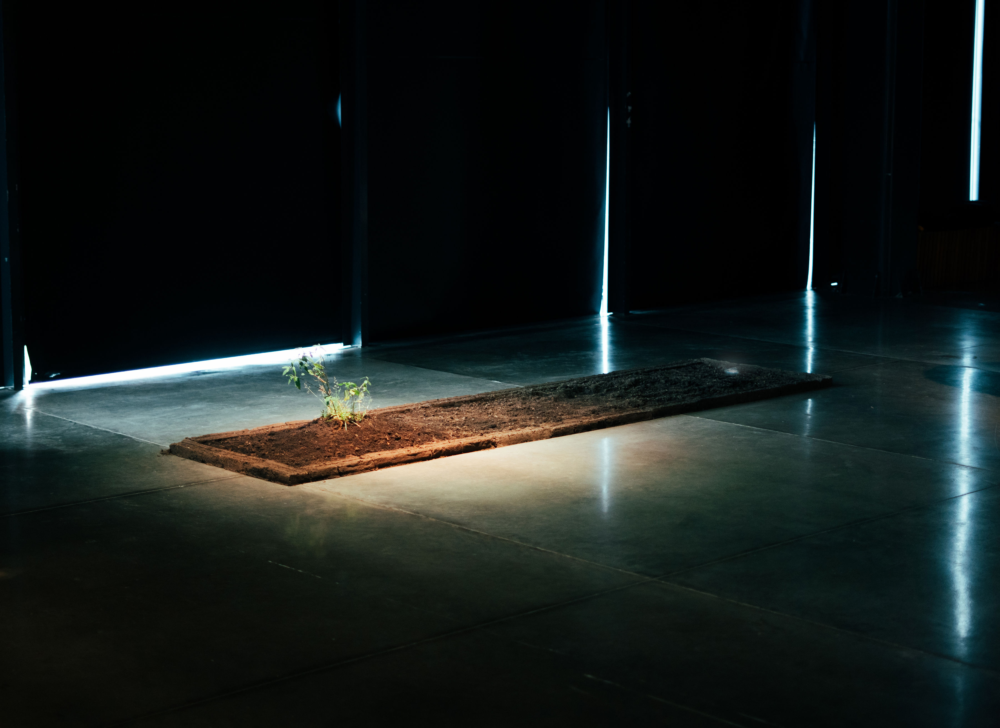
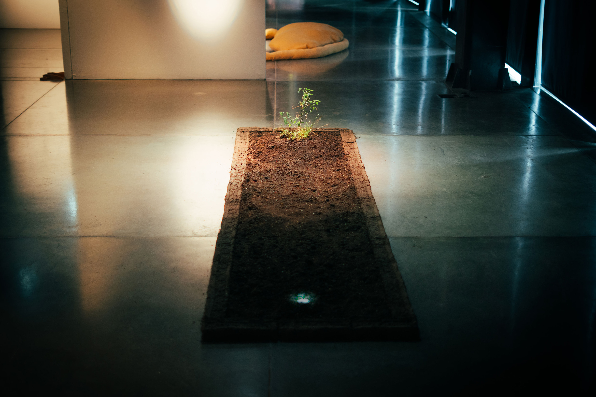
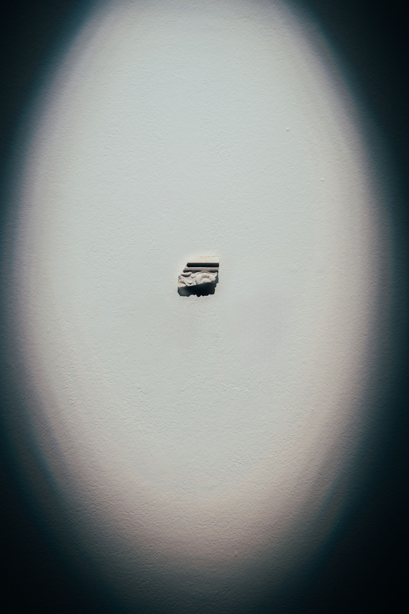
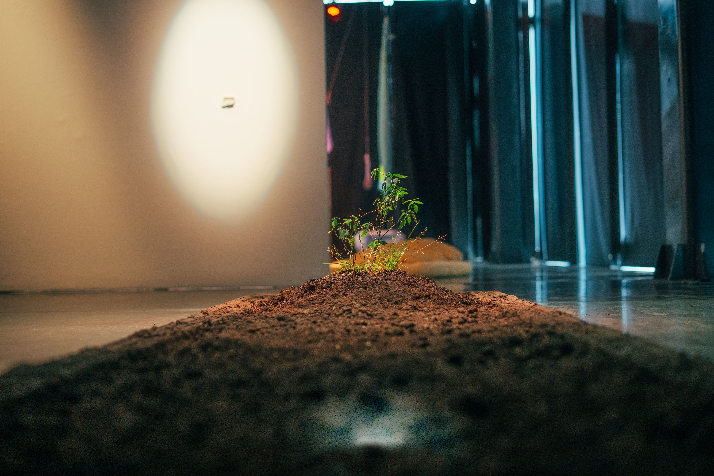
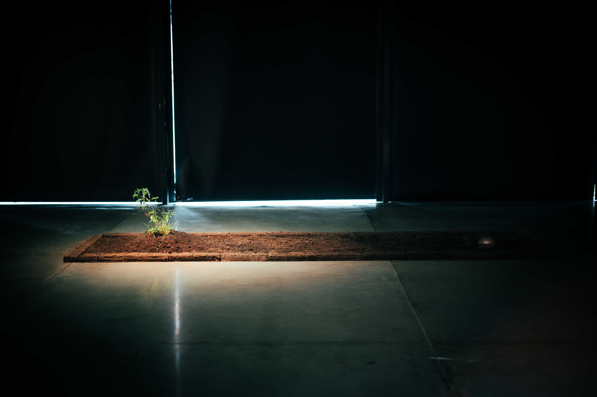
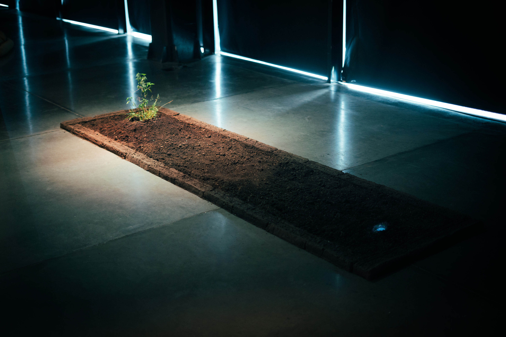
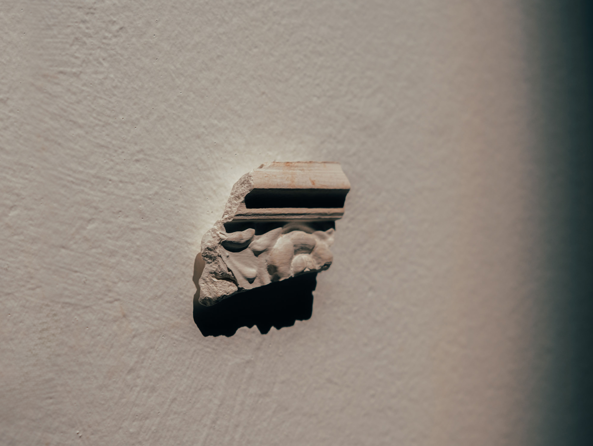
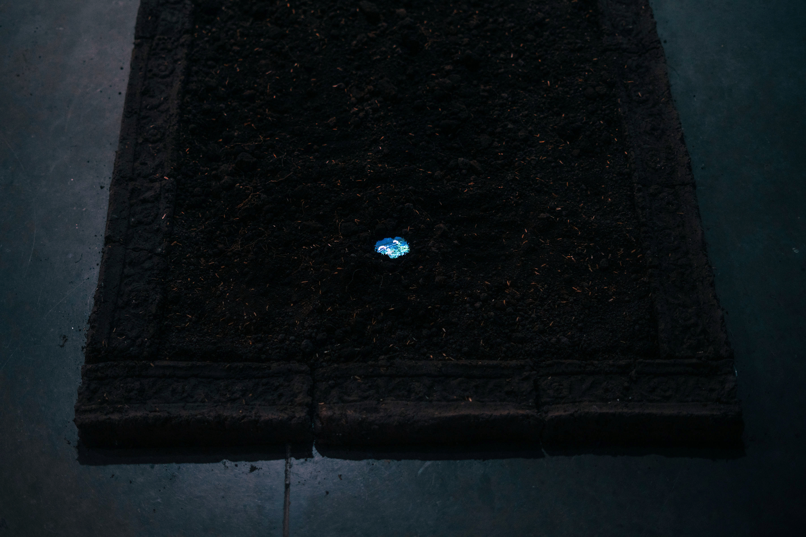
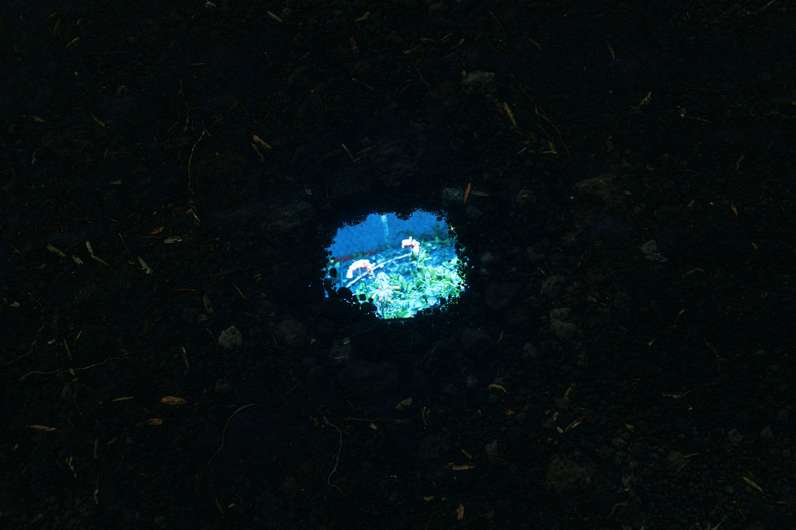

 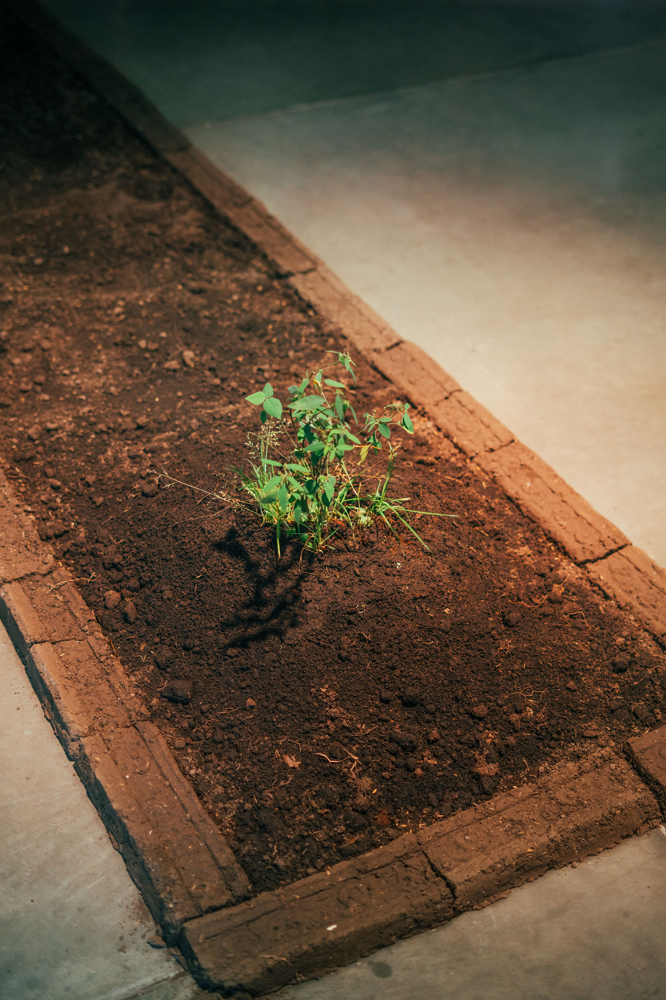
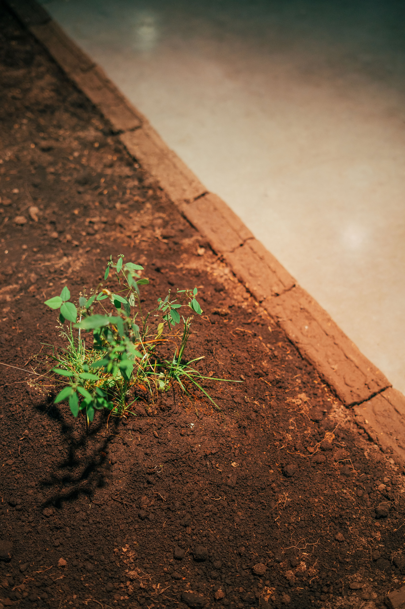
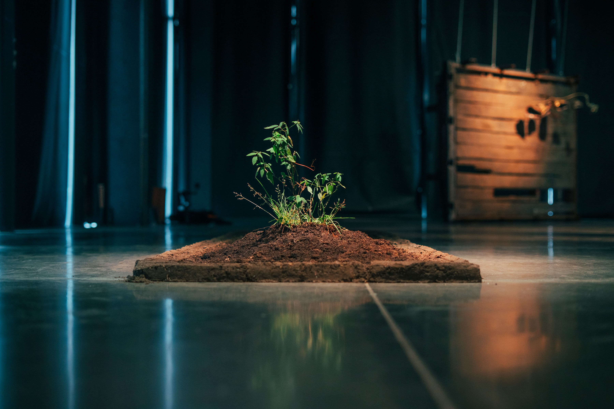
fotos de daniel ricardo pacheco calvo
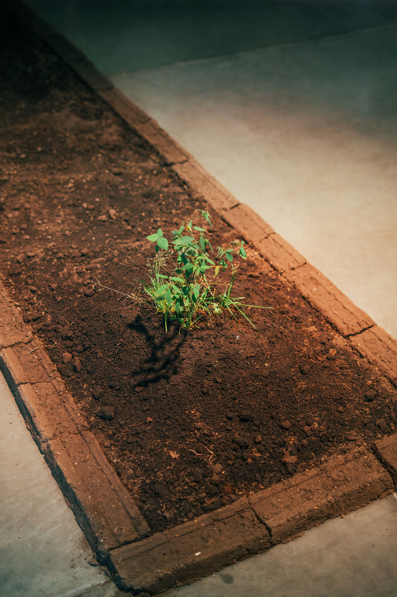
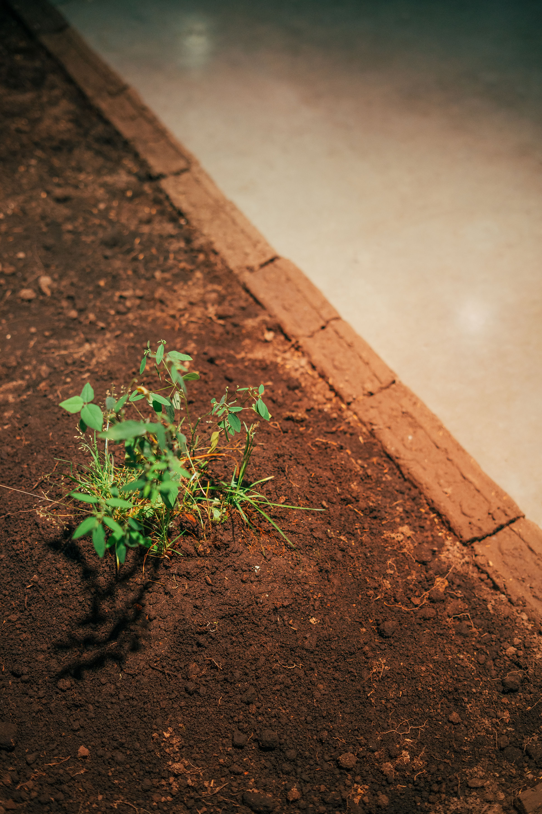
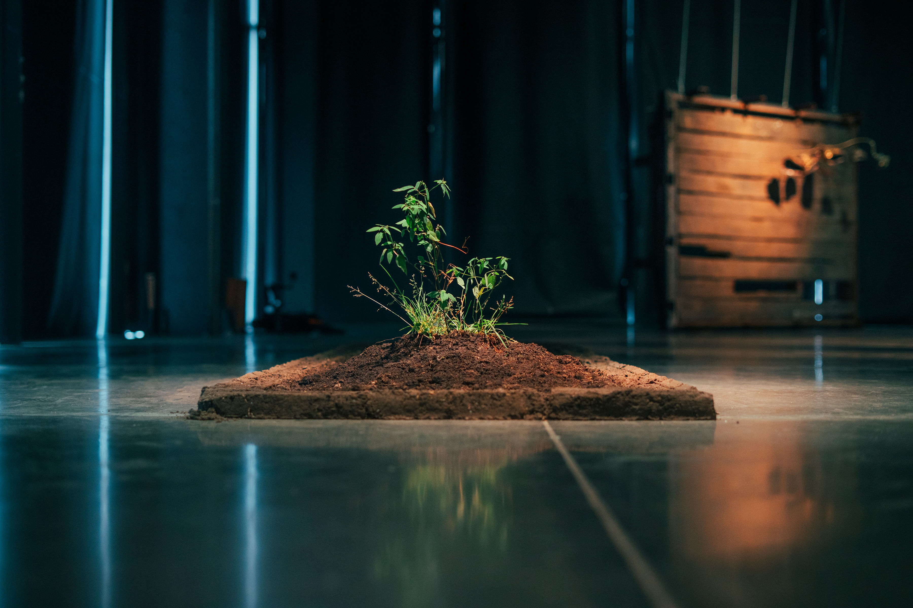
fotos de daniel ricardo pacheco calvo